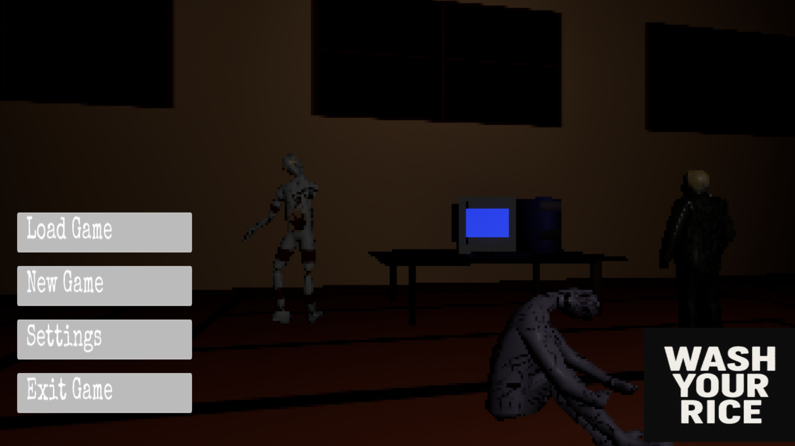

Unreal Engine Project
WashYourRice
A team-built first-person survival horror game developed in Unreal Engine 5 using C++. The project used Git for collaboration and focused on gameplay functionality, project organization, and shared development workflow.
